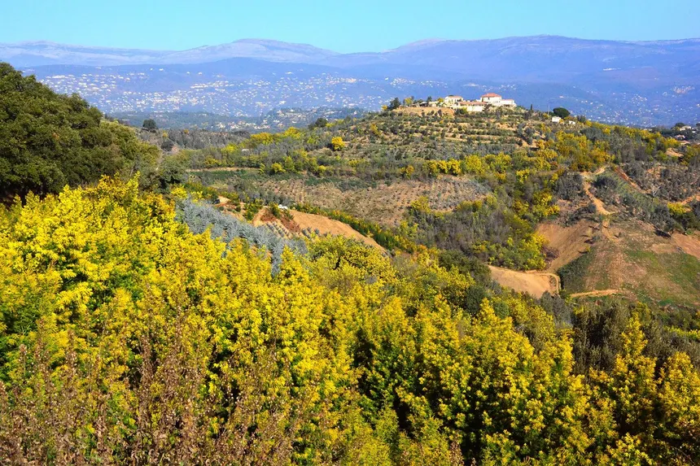
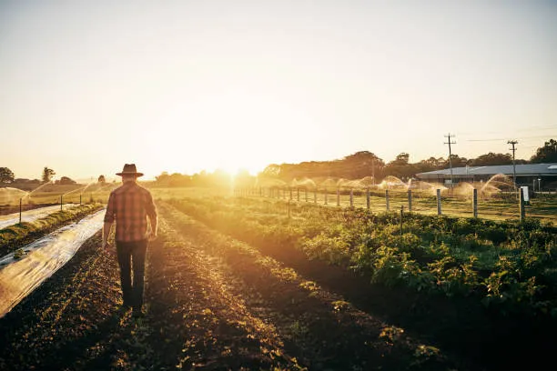

Le cœur jaune de la région
Notre commune abrite le plus grand territoire arboré de mimosa, une particularité unique qui fait notre renommée mondiale. De janvier à mars, nos collines se parent d'un manteau jaune éclatant, offrant un spectacle visuel et olfactif inoubliable.
La route du Mimosa
Activités & Loisirs
Explorez notre patrimoine à travers nos sentiers et nos traditions.
4 Sentiers balisés


Terroir & Artisans
Miel, huile d'olive et artisanat d'art : partez à la rencontre de nos producteurs.
Voir l'annuaire local
Patrimoine Bâti
Visitez notre église historique et découvrez l'histoire de notre village.
En savoir plus